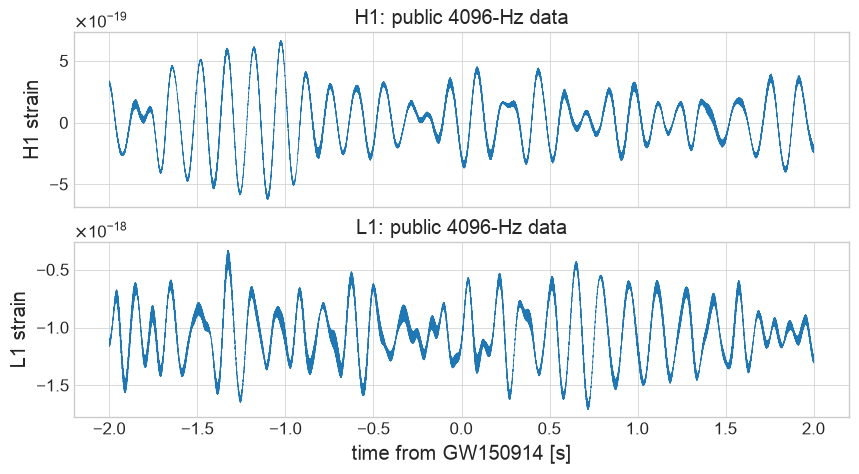
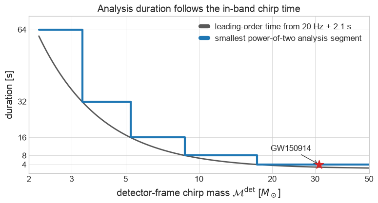
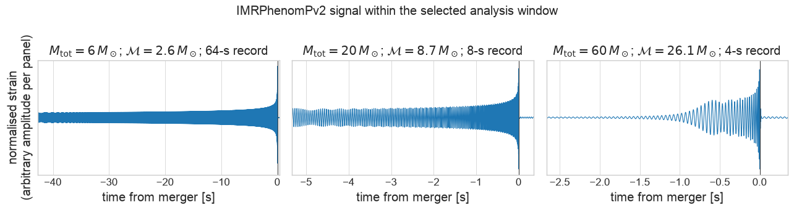
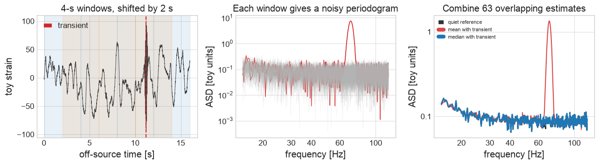
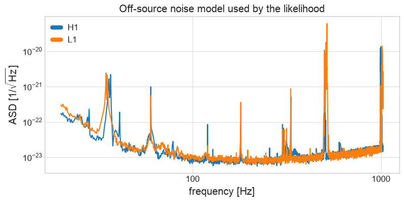
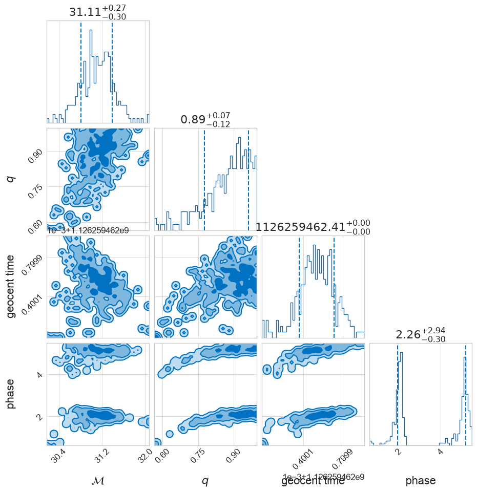
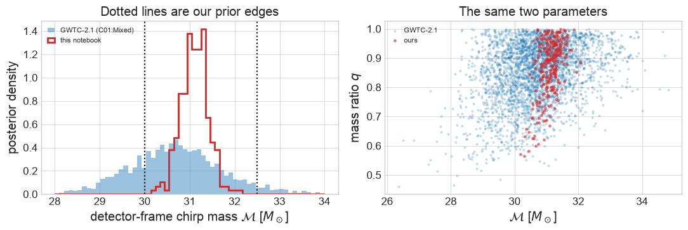

Part 2B: GW150914 with Bilby#
FQCP 2026 · Bayesian parameter estimation for gravitational-wave sources
Goal and route#
Analyse public H1/L1 data around GW150914 with Bilby’s standard compact-binary likelihood.
Live route
Build the data and PSD, inspect which parameters are sampled or fixed, then construct the likelihood. The final Dynesty cell is optional live and can take 10–30 minutes in Colab.
Boundary: This is a restricted non-spinning analysis with several extrinsic parameters fixed and fast workshop sampler settings. It is not the published LVK production analysis.
Source and attribution#
This notebook directly adapts the GWOSC Open Data Workshop notebook Parameter estimation for compact object mergers. It preserves the recognisable GWOSC sequence:
The package versions, explanations, exercises, and reproducibility checks are adapted for this course.
import os, sys, subprocess, importlib.util
IN_COLAB = "COLAB_RELEASE_TAG" in os.environ
needed = ("bilby", "gwpy", "lal", "lalsimulation")
if any(importlib.util.find_spec(package) is None for package in needed):
if IN_COLAB:
subprocess.check_call(
[
sys.executable,
"-m",
"pip",
"install",
"-q",
"bilby==2.8.0",
"gwpy>=3.0,<4",
"lalsuite==7.26.15",
]
)
else:
raise ImportError("Install bilby, gwpy, and lalsuite, or run in Colab.")
from pathlib import Path
from urllib.request import urlretrieve
import numpy as np
import matplotlib.pyplot as plt
import bilby
from gwpy.timeseries import TimeSeries
from bilby.core.prior import PowerLaw, Uniform
from bilby.gw.conversion import (
convert_to_lal_binary_black_hole_parameters,
generate_all_bbh_parameters,
)
bilby.core.utils.log.setup_logger(log_level="WARNING")
plt.style.use("seaborn-v0_8-whitegrid")
print("Bilby version:", bilby.__version__)
/Users/avi/Documents/projects/WORKSHOP/FQCP2026_GW_data_analysis/.venv/lib/python3.12/site-packages/gwpy/time/__init__.py:36: UserWarning: Wswiglal-redir-stdio:
SWIGLAL standard output/error redirection is enabled in IPython.
This may lead to performance penalties. To disable locally, use:
with lal.no_swig_redirect_standard_output_error():
...
To disable globally, use:
lal.swig_redirect_standard_output_error(False)
Note however that this will likely lead to error messages from
LAL functions being either misdirected or lost when called from
Jupyter notebooks.
To suppress this warning, use:
import warnings
warnings.filterwarnings("ignore", "Wswiglal-redir-stdio")
import lal
from lal import LIGOTimeGPS
Bilby version: 2.8.0
1. Get the GW150914 analysis data#
GW150914 occurred at GPS time \(1126259462.4\). Following GWOSC, use a four-second analysis segment with two seconds after the trigger. The 4096-Hz public product is used explicitly.
time_of_event = 1126259462.4
post_trigger_duration = 2
duration = 4
sampling_frequency = 4096
analysis_start = time_of_event + post_trigger_duration - duration
analysis_data = {
detector: TimeSeries.fetch_open_data(
detector,
analysis_start,
analysis_start + duration,
sample_rate=sampling_frequency,
cache=True,
timeout=120,
)
for detector in ("H1", "L1")
}
interferometers = bilby.gw.detector.InterferometerList(["H1", "L1"])
for interferometer in interferometers:
interferometer.minimum_frequency = 20
interferometer.maximum_frequency = 1024
interferometer.set_strain_data_from_gwpy_timeseries(
analysis_data[interferometer.name]
)
fig, axes = plt.subplots(2, 1, figsize=(10, 5), sharex=True)
for axis, detector in zip(axes, ("H1", "L1")):
series = analysis_data[detector]
axis.plot(series.times.value - time_of_event, series.value, lw=0.5)
axis.set(ylabel=f"{detector} strain", title=f"{detector}: public 4096-Hz data")
axes[-1].set_xlabel("time from GW150914 [s]")
plt.show()

Expected output — open this if your cell has not run yet

Why does GW150914 need only four seconds?#
At leading post-Newtonian order, the time remaining from a low frequency \(f_{\rm low}\) scales as
A lower-chirp-mass binary spends much longer chirping through the detector band. CBC analyses therefore use longer data segments for lower masses and short power-of-two segments for high-mass systems. The curve below turns the leading-order time from 20 Hz, plus a 2.1-second post-trigger margin, into the smallest power-of-two segment from 4 to 64 seconds.
This is an LVK/Bilby-style teaching rule, not a universal catalogue lookup: production choices also depend on the low-frequency cutoff, waveform modes, priors, and pipeline. The 4, 8, 16, 32, and 64-second analysis families are documented for the GWTC-1 Bilby analyses in Romero-Shaw et al. (2020).
from scipy.constants import G, c
solar_mass_kg = 1.988409870698051e30
chirp_mass_grid = np.geomspace(2.2, 50, 500)
chirp_mass_seconds = G * chirp_mass_grid * solar_mass_kg / c**3
inspiral_time_20hz = 5 / 256 * chirp_mass_seconds ** (-5 / 3) * (np.pi * 20) ** (-8 / 3)
required_time = inspiral_time_20hz + 2.1
analysis_duration = np.clip(2 ** np.ceil(np.log2(required_time)), 4, 64)
fig, ax = plt.subplots(figsize=(9, 4.2))
ax.plot(
chirp_mass_grid,
required_time,
color="0.35",
lw=2,
label=r"leading-order time from 20 Hz + 2.1 s",
)
ax.step(
chirp_mass_grid,
analysis_duration,
where="post",
color="C0",
lw=3,
label="smallest power-of-two analysis segment",
)
ax.scatter([31.2], [4], marker="*", s=180, color="C3", zorder=4)
ax.annotate(
"GW150914",
(31.2, 4),
xytext=(-12, 20),
textcoords="offset points",
ha="right",
arrowprops={"arrowstyle": "->", "color": "0.25"},
)
ax.set(
xlabel=r"detector-frame chirp mass $\mathcal{M}^{\rm det}$ [$M_\odot$]",
ylabel="duration [s]",
title="Analysis duration follows the in-band chirp time",
xlim=(2.2, 50),
ylim=(0, 70),
yticks=[4, 8, 16, 32, 64],
)
ax.set_xscale("log")
ax.set_xticks([2, 3, 5, 10, 20, 30, 50])
ax.set_xticklabels(["2", "3", "5", "10", "20", "30", "50"])
from matplotlib.ticker import NullLocator
ax.xaxis.set_minor_locator(NullLocator())
ax.set_yticklabels(["4", "8", "16", "32", "64"])
ax.legend(frameon=False)
plt.show()

Expected output — open this if your cell has not run yet

What those analysis windows contain in the time domain#
The duration choice is not a statement that every second contains signal. The examples below show three equal-mass binaries in their selected records, recentered on merger for display as in the NZ workshop (only the first 0.35 s after merger is shown). The 60-\(M_\odot\) system enters at 20 Hz only near the end of its four-second record; the 6-\(M_\odot\) system has a long, slow inspiral, so it needs a much longer record.
These use the same IMRPhenomPv2 inspiral–merger–ringdown model as the NZ workshop, rendered through Bilby/LAL. Each panel has its own amplitude scale and uses equal masses solely to make the duration comparison transparent; it is not an event reconstruction.
# Equal-mass IMRPhenomPv2 signals in their selected analysis windows.
# The physical waveform removes the artificial ISCO cut in a Newtonian cartoon.
def normalized_imr_signal(total_mass, window_duration, sample_rate=2048):
chirp_mass = total_mass * 0.25 ** (3 / 5)
generator = bilby.gw.WaveformGenerator(
duration=window_duration,
sampling_frequency=sample_rate,
frequency_domain_source_model=bilby.gw.source.lal_binary_black_hole,
waveform_arguments={
"waveform_approximant": "IMRPhenomPv2",
"reference_frequency": 20.0,
"minimum_frequency": 20.0,
},
)
parameters = dict(
mass_1=total_mass / 2,
mass_2=total_mass / 2,
a_1=0.0,
a_2=0.0,
tilt_1=0.0,
tilt_2=0.0,
phi_jl=0.0,
phi_12=0.0,
lambda_1=0.0,
lambda_2=0.0,
luminosity_distance=1000.0,
theta_jn=0.0,
ra=0.0,
dec=0.0,
psi=0.0,
phase=0.0,
geocent_time=0.0,
)
strain = generator.time_domain_strain(parameters)["plus"]
# The frequency-domain model is represented on a periodic FFT grid. Roll
# the peak into the interior, as in the NZ workshop, before plotting it.
strain = np.roll(strain, -len(strain) // 3)
strain /= np.max(np.abs(strain))
peak = np.argmax(np.abs(strain))
time_from_merger = generator.time_array - generator.time_array[peak]
return time_from_merger, strain, chirp_mass
examples = [(6, 64), (20, 8), (60, 4)]
fig, axes = plt.subplots(1, 3, figsize=(13, 3.3))
for ax, (total_mass, window_duration) in zip(axes, examples):
time, strain, chirp_mass = normalized_imr_signal(total_mass, window_duration)
ax.plot(time, strain, color="C0", lw=0.8)
ax.axvline(0, color="0.25", lw=0.8)
ax.set(
xlim=(-2 * window_duration / 3, min(window_duration / 3, 0.35)),
ylim=(-1.12, 1.12),
xlabel="time from merger [s]",
title=(
rf"$M_{{\rm tot}}={total_mass}\,M_\odot$; "
rf"$\mathcal{{M}}={chirp_mass:.1f}\,M_\odot$; "
rf"{window_duration}-s record"
),
)
ax.set_yticks([])
axes[0].set_ylabel("normalised strain\n(arbitrary amplitude per panel)")
fig.suptitle("IMRPhenomPv2 signal within the selected analysis window", y=1.03)
plt.tight_layout()
plt.show()

Expected output — open this if your cell has not run yet

2. Estimate the PSD from off-source data#
The likelihood weights residuals by a noise PSD. Following the GWOSC tutorial, estimate it from the 128 seconds immediately before the analysis segment using four-second Tukey-windowed periodograms, 50% overlap, and a median average. This is deliberately off source: the event should not define its own noise weighting.
This off-source construction is a median-Welch PSD, and each word earns its place:
Welch. One periodogram is a terrible estimate — its scatter at each frequency is comparable to its mean. Averaging many short windowed stretches trades frequency resolution for far lower variance.
Median. The mean is efficient for stationary Gaussian noise, but one glitchy stretch drags it upward. The median survives a contaminated minority. (
scipyapplies the median-bias correction; the raw median is not an unbiased PSD.)Overlap. Windows downweight their own edges, so sliding by half a window reuses those samples near the next window’s centre. Adjacent estimates are correlated, so this improves stability but does not double the independent information.
Keep the four timescales distinct:
quantity |
value here |
role |
|---|---|---|
event-analysis duration |
4 s |
data entering the likelihood |
Welch FFT length |
4 s |
one periodogram; gives 0.25-Hz bins |
overlap / stride |
2 s / 2 s |
50% overlap between periodograms |
off-source PSD record |
128 s |
reservoir supplying 63 stretches |
Median-Welch is common, not the only defensible LVK noise model. BayesLine-like on-source fits and pipeline-specific PSD estimators answer related but different questions; see Chatziioannou et al. (2019).
Optional visual explainer: why use a median?#
The next cell builds a separate toy dataset to show how one transient affects individual periodograms, their mean, and their median. It is useful reference material, but it is not part of the GW150914 data path. On the live route, skip to the following cell, which estimates the actual H1/L1 PSDs.
# A visual Welch construction: one transient contaminates a few windows,
# while the median remains representative of the many quiet windows.
from scipy.signal import get_window, periodogram, welch
welch_rng = np.random.default_rng(2026)
toy_rate = 256
toy_duration = 128
fft_length = 4
nperseg = toy_rate * fft_length
noverlap = nperseg // 2
toy_time = np.arange(toy_rate * toy_duration) / toy_rate
# Smooth coloured noise plus one deliberately obvious broadband transient.
toy_frequency = np.fft.rfftfreq(toy_time.size, 1 / toy_rate)
toy_shape = 1 + (18 / np.maximum(toy_frequency, 1)) ** 4
quiet_noise = np.fft.irfft(
np.fft.rfft(welch_rng.normal(size=toy_time.size)) * np.sqrt(toy_shape),
n=toy_time.size,
)
glitch = (
100
* np.exp(-0.5 * ((toy_time - 11.2) / 0.08) ** 2)
* np.sin(2 * np.pi * 70 * (toy_time - 11.2))
)
contaminated_noise = quiet_noise + glitch
starts = np.arange(0, toy_time.size - nperseg + 1, nperseg - noverlap)
window = get_window(("tukey", 0.2), nperseg)
segment_psds = []
touches_glitch = []
for start in starts:
frequency, one_psd = periodogram(
contaminated_noise[start : start + nperseg],
fs=toy_rate,
window=window,
scaling="density",
)
segment_psds.append(one_psd)
touches_glitch.append(start / toy_rate <= 11.2 < (start + nperseg) / toy_rate)
segment_psds = np.asarray(segment_psds)
_, clean_reference = welch(
quiet_noise,
fs=toy_rate,
window=("tukey", 0.2),
nperseg=nperseg,
noverlap=noverlap,
average="median",
)
_, contaminated_mean = welch(
contaminated_noise,
fs=toy_rate,
window=("tukey", 0.2),
nperseg=nperseg,
noverlap=noverlap,
average="mean",
)
_, contaminated_median = welch(
contaminated_noise,
fs=toy_rate,
window=("tukey", 0.2),
nperseg=nperseg,
noverlap=noverlap,
average="median",
)
fig, axes = plt.subplots(1, 3, figsize=(13, 3.7))
shown = toy_time < 16
axes[0].plot(toy_time[shown], contaminated_noise[shown], color="0.25", lw=0.7)
for index, start in enumerate(starts[:7]):
left = start / toy_rate
axes[0].axvspan(left, left + fft_length, color=f"C{index % 2}", alpha=0.10)
axes[0].axvline(11.2, color="C3", ls="--", label="transient")
axes[0].set(
xlabel="off-source time [s]",
ylabel="toy strain",
title="4-s windows, shifted by 2 s",
)
axes[0].legend(frameon=False)
band = (frequency >= 15) & (frequency <= 120)
for one_psd, bad in zip(segment_psds, touches_glitch):
axes[1].loglog(
frequency[band],
np.sqrt(one_psd[band]),
color="C3" if bad else "0.7",
alpha=0.85 if bad else 0.16,
lw=1.1 if bad else 0.7,
)
axes[1].set(
xlabel="frequency [Hz]",
ylabel="ASD [toy units]",
title="Each window gives a noisy periodogram",
)
axes[2].loglog(
frequency[band],
np.sqrt(clean_reference[band]),
color="0.2",
ls="--",
lw=2,
label="quiet reference",
)
axes[2].loglog(
frequency[band],
np.sqrt(contaminated_mean[band]),
color="C3",
alpha=0.85,
label="mean with transient",
)
axes[2].loglog(
frequency[band],
np.sqrt(contaminated_median[band]),
color="C0",
lw=2,
label="median with transient",
)
axes[2].set(
xlabel="frequency [Hz]",
ylabel="ASD [toy units]",
title=f"Combine {len(starts)} overlapping estimates",
)
axes[2].legend(frameon=False, fontsize=8)
plt.tight_layout()
plt.show()

Expected output — open this if your cell has not run yet

psd_duration = 32 * duration
psd_start = analysis_start - psd_duration
psd_data = {
detector: TimeSeries.fetch_open_data(
detector,
psd_start,
psd_start + psd_duration,
sample_rate=sampling_frequency,
cache=True,
timeout=120,
)
for detector in ("H1", "L1")
}
for interferometer in interferometers:
alpha = 2 * interferometer.strain_data.roll_off / duration
estimate = psd_data[interferometer.name].psd(
fftlength=duration,
overlap=duration / 2,
window=("tukey", alpha),
method="median",
)
interferometer.power_spectral_density = bilby.gw.detector.PowerSpectralDensity(
frequency_array=estimate.frequencies.value,
psd_array=estimate.value,
)
fig, ax = plt.subplots(figsize=(9, 4))
for interferometer in interferometers:
mask = interferometer.strain_data.frequency_mask
frequency = interferometer.frequency_array[mask]
asd = interferometer.amplitude_spectral_density_array[mask]
ax.loglog(frequency, asd, label=interferometer.name)
ax.set(
xlabel="frequency [Hz]",
ylabel=r"ASD [1/$\sqrt{\mathrm{Hz}}$]",
title="Off-source noise model used by the likelihood",
)
ax.legend()
plt.show()

Expected output — open this if your cell has not run yet

Question#
Why should the PSD normally be estimated away from the signal? Compute the ratio of the H1 ASD near 100 Hz to its median between 80 and 120 Hz as a quick local sanity check.
h1 = interferometers[0]
# Your code here: mask to the 80-120 Hz band, then compare the ASD at 100 Hz
# with the median of the band.
Hint
Use h1.frequency_array and h1.amplitude_spectral_density_array; apply the interferometer’s frequency mask as well.
3. Define the restricted prior#
Before reading the code, separate what this workshop analysis learns from what it assumes:
Sampled from the data |
Fixed for speed |
|---|---|
detector-frame chirp mass |
both spins |
mass ratio |
sky position |
coalescence time and phase |
inclination and polarisation |
luminosity distance |
calibration uncertainty |
Sample detector-frame chirp mass, mass ratio, phase, coalescence time, and luminosity distance. Fix spins, sky position, orientation, and polarisation to keep the workshop runtime manageable. The prior is part of this analysis; these fixed values are not facts established by the data.
prior = bilby.core.prior.PriorDict()
prior["chirp_mass"] = Uniform(30.0, 32.5, name="chirp_mass")
prior["mass_ratio"] = Uniform(0.5, 1.0, name="mass_ratio")
prior["phase"] = Uniform(0, 2 * np.pi, name="phase", boundary="periodic")
prior["geocent_time"] = Uniform(
time_of_event - 0.1, time_of_event + 0.1, name="geocent_time"
)
prior["luminosity_distance"] = PowerLaw(
alpha=2, minimum=50, maximum=2000, name="luminosity_distance", unit="Mpc"
)
prior.update(
{
"a_1": 0.0,
"a_2": 0.0,
"tilt_1": 0.0,
"tilt_2": 0.0,
"phi_12": 0.0,
"phi_jl": 0.0,
"dec": -1.2232,
"ra": 2.19432,
"theta_jn": 1.89694,
"psi": 0.532268,
}
)
prior
{'chirp_mass': Uniform(minimum=30.0, maximum=32.5, name='chirp_mass', latex_label='$\\mathcal{M}$', unit=None, boundary=None),
'mass_ratio': Uniform(minimum=0.5, maximum=1.0, name='mass_ratio', latex_label='$q$', unit=None, boundary=None),
'phase': Uniform(minimum=0, maximum=6.283185307179586, name='phase', latex_label='$\\phi$', unit=None, boundary='periodic'),
'geocent_time': Uniform(minimum=1126259462.3000002, maximum=1126259462.5, name='geocent_time', latex_label='$t_c$', unit=None, boundary=None),
'luminosity_distance': PowerLaw(alpha=2, minimum=50, maximum=2000, name='luminosity_distance', latex_label='$d_L$', unit='Mpc', boundary=None),
'a_1': 0.0,
'a_2': 0.0,
'tilt_1': 0.0,
'tilt_2': 0.0,
'phi_12': 0.0,
'phi_jl': 0.0,
'dec': -1.2232,
'ra': 2.19432,
'theta_jn': 1.89694,
'psi': 0.532268}
4. Build the waveform and likelihood#
WaveformGenerator maps parameters to polarizations. Each interferometer then
applies its response and arrival-time delay. GravitationalWaveTransient
evaluates the coherent PSD-weighted residual likelihood. Time, phase, and
distance are analytically marginalised during sampling and reconstructed later.
waveform_arguments = dict(
waveform_approximant="IMRPhenomPv2",
reference_frequency=50.0,
minimum_frequency=20.0,
)
waveform_generator = bilby.gw.WaveformGenerator(
duration=duration,
sampling_frequency=sampling_frequency,
frequency_domain_source_model=bilby.gw.source.lal_binary_black_hole,
parameter_conversion=convert_to_lal_binary_black_hole_parameters,
waveform_arguments=waveform_arguments,
)
likelihood = bilby.gw.likelihood.GravitationalWaveTransient(
interferometers=interferometers,
waveform_generator=waveform_generator,
priors=prior,
time_marginalization=True,
phase_marginalization=True,
distance_marginalization=True,
)
print("Likelihood:", type(likelihood).__name__)
print(
"Frequency bins used:",
sum(ifo.strain_data.frequency_mask.sum() for ifo in interferometers),
)
Likelihood: GravitationalWaveTransient
Frequency bins used: 8034
5. Run Dynesty#
This is the genuine sampler call from the GWOSC workflow. The deliberately loose stopping criterion and small live-point count reduce classroom runtime. Do not reuse them as production defaults.
result_short = bilby.run_sampler(
likelihood=likelihood,
priors=prior,
sampler="dynesty",
outdir="gw150914_short",
label="GW150914",
conversion_function=generate_all_bbh_parameters,
nlive=250,
dlogz=1.0,
sample="rwalk",
clean=False,
)
parameters = ["chirp_mass", "mass_ratio", "geocent_time", "phase"]
print(result_short.posterior[parameters].describe(percentiles=[0.05, 0.5, 0.95]))
print(
f"log Bayes factor: {result_short.log_bayes_factor:.1f} +/- {result_short.log_evidence_err:.1f}"
)
result_short.plot_corner(parameters=parameters, prior=True, save=False)
plt.show()
16:45 bilby WARNING : Using cached result
16:45 bilby WARNING : Result.save_to_file called with extension=True. This will default to json, and ignore the extension from the filename. This behaviour is deprecated and will be removed.
chirp_mass mass_ratio geocent_time phase
count 285.000000 285.000000 2.850000e+02 285.000000
mean 31.104106 0.870579 1.126259e+09 3.469115
std 0.303559 0.096464 1.893994e-04 1.578519
min 30.177741 0.565134 1.126259e+09 0.624340
5% 30.601197 0.680850 1.126259e+09 1.725767
50% 31.110819 0.892530 1.126259e+09 2.258739
95% 31.583848 0.987836 1.126259e+09 5.325347
max 32.067853 0.998354 1.126259e+09 5.494090
log Bayes factor: 265.7 +/- 0.2

Expected output — open this if your cell has not run yet

Compare with the published posterior#
We have a posterior for GW150914. So does the LVK, from an analysis that took rather longer than four minutes. Both are public, so the comparison is available to anyone — and it is the only honest way to find out whether the run above meant anything.
The reference is the GWTC-2.1 data release,
doi:10.5281/zenodo.6513631, released
under CC BY 4.0. Inside it, the analysis labelled C01:Mixed holds the
catalogue’s fiducial samples for this event, pooled over two waveform families
(IMRPhenomXPHM and SEOBNRv4PHM).
Getting it yourself#
The full file for this one event is 134 MB, which is not a thing to download in a workshop room. So the cell below reads a small CSV of the columns we need. This is how you would pull the real thing later:
from urllib.request import urlretrieve
import h5py
url = (
"https://zenodo.org/api/records/6513631/files/"
"IGWN-GWTC2p1-v2-GW150914_095045_PEDataRelease_mixed_cosmo.h5/content"
)
urlretrieve(url, "GW150914_gwtc2p1.h5")
with h5py.File("GW150914_gwtc2p1.h5", "r") as source:
published = source["C01:Mixed/posterior_samples"][()]
print(published.dtype.names) # 59 parameters
Every event in the catalogue is there under its own filename, and pesummary
will read these files for you if you would rather not touch h5py.
published_candidates = [
Path("assets/gw150914_gwtc2p1_posterior.csv"),
Path("../assets/gw150914_gwtc2p1_posterior.csv"),
]
published_path = next(
(path for path in published_candidates if path.exists()), published_candidates[0]
)
published_url = (
"https://raw.githubusercontent.com/nz-gravity/"
"FQCP2026_GW_data_analysis/main/assets/gw150914_gwtc2p1_posterior.csv"
)
if not published_path.exists():
published_path.parent.mkdir(parents=True, exist_ok=True)
urlretrieve(published_url, published_path)
published = np.genfromtxt(published_path, delimiter=",", names=True)
chirp_mass_samples = result_short.posterior["chirp_mass"].to_numpy()
mass_ratio_samples = result_short.posterior["mass_ratio"].to_numpy()
fig, (ax, bx) = plt.subplots(1, 2, figsize=(11, 3.8))
bins = np.linspace(28.0, 34.0, 60)
ax.hist(
published["chirp_mass"],
bins=bins,
density=True,
alpha=0.45,
label="GWTC-2.1 (C01:Mixed)",
)
ax.hist(
chirp_mass_samples,
bins=bins,
density=True,
histtype="step",
lw=2,
color="C3",
label="this notebook",
)
for edge in (prior["chirp_mass"].minimum, prior["chirp_mass"].maximum):
ax.axvline(edge, color="k", ls=":", lw=1.5)
ax.set(
xlabel=r"detector-frame chirp mass $\mathcal{M}$ [$M_\odot$]",
ylabel="posterior density",
title="Dotted lines are our prior edges",
)
ax.legend(fontsize=8)
bx.scatter(
published["chirp_mass"],
published["mass_ratio"],
s=4,
alpha=0.18,
label="GWTC-2.1",
)
bx.scatter(
chirp_mass_samples, mass_ratio_samples, s=6, alpha=0.5, color="C3", label="ours"
)
bx.set(
xlabel=r"$\mathcal{M}$ [$M_\odot$]",
ylabel="mass ratio $q$",
title="The same two parameters",
)
bx.legend(fontsize=8)
plt.tight_layout()
plt.show()
for label, values in [
("GWTC-2.1", published["chirp_mass"]),
("this notebook", chirp_mass_samples),
]:
low, median, high = np.quantile(values, [0.05, 0.5, 0.95])
print(f"{label:15s} Mc = {median:.2f} [{low:.2f}, {high:.2f}] Msun (90%)")

GWTC-2.1 Mc = 30.69 [29.07, 32.49] Msun (90%)
this notebook Mc = 31.11 [30.60, 31.58] Msun (90%)
Expected output — open this if your cell has not run yet

Question#
Look at the overlay, then answer three things.
Do the two posteriors agree? Quote the median and 90% interval for each. Say what “agree” should even mean here — overlapping intervals, consistent medians, or matching widths? They are not the same test.
Why, or why not? Our run and the published one differ in many ways at once. List every difference you can identify, then say which of them you think actually moved the answer. One of them is visible directly in the left-hand panel.
What would you change? You have four minutes of compute. Spend it: name the single change most likely to bring our posterior closer to the published one, and say how you would know whether it worked.
# Your code here.
Hint
For (1): np.quantile(..., [0.05, 0.5, 0.95]) on both, and compare the widths
as well as the centres.
For (2): work through the analysis from the top. Waveform model, spins, extrinsic parameters, PSD estimate, calibration, sampler settings, priors. Then look again at where the dotted prior edges fall relative to the grey histogram.
For (3): whatever you identified in (2) as the binding constraint. Note that “run the sampler longer” and “let the model move” are different kinds of fix, and only one of them is about convergence.
Read or try next#
The current GWOSC workshop course supplies the wider open-data workflow and newer exercises.
Bilby’s compact-binary tutorial is the maintained reference for the likelihood and marginalisation options.
The GWOSC event portal links strain products, catalogue metadata, and released posterior samples. Compare products only after checking which catalogue release and waveform model produced them.
Next: